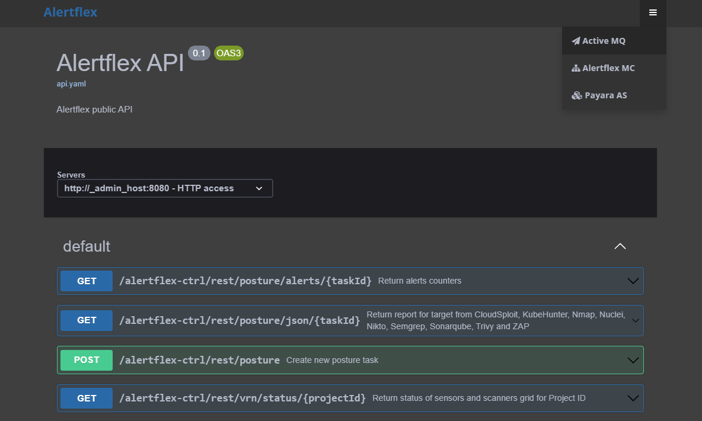

Cnode Configuration
Configure via Web UI
To open the solution’s web landing page, open a web browser and type in the following URL: “http://hostname” or “http://IP address” of the Central Node (Cnode). Replace “hostname” or “IP address” with the actual hostname or IP address of your Central Node.
By accessing the web landing page, you will gain access to Swagger UI for Alertflex REST API and the administration consoles of Active MQ and Payara AS, which are components of the solution. These consoles provide administrative control and configuration options for managing the Alertflex Controller.
Configure via Console
The primary configuration file for the Alertflex controller is project.properties, located in the Project folder.
# Update project properties
update_properties=0
# Generate alerts based on status of findings: 1 - for all existing, 2 - for non confirmed, 3 - only for new
alert_type=3
# Set project parameters
alert_timerange=0
node_timerange=0
posture_timerange=0
ioc_check=0
prometheus_stat=0
send_netflow=0
send_incident=0
# Graylog
graylog_host=
graylog_port=0
# ELK/OpenSearch log
elk_host=
elk_port=9200
elk_user=
elk_pass=
elk_storepass=
elk_keystore=
elk_truststore=
# TheHive incidents
hive_url=
hive_key=
# GitLab incidents
gitlab_url=
gitlab_key=
# SonarQube
sonar_url=
sonar_user=
sonar_pass=
# Dependency-track
track_url=
track_key=
track_project=
track_version=
Increase AS Payara JVM heap size
By default, Payara Application server uses 512 MB of memory for JVM heap. This size of memory isn’t enough for the deployment of Alertflex, therefore the install script changes a JVM heap to 3 Gb memory. If your computer/virtual machine has more than 8 Gb memory, you can change JVM heap size by next commands:
sudo $GLASSFISH_PATH/bin/asadmin delete-jvm-options '-Xms512m'
sudo $GLASSFISH_PATH/bin/asadmin delete-jvm-options '-Xmx512m'
sudo $GLASSFISH_PATH/bin/asadmin create-jvm-options '-Xms3g'
sudo $GLASSFISH_PATH/bin/asadmin create-jvm-options '-Xmx3g'
Troubleshooting
Open ActiveMQ console
https://hostname/admin(default useradmin, password was set inenv.shfile).Check messages in Queues panel, the amount of Messages Enqueued should be equal to the amount Messages Dequeued.
Restart Payara server if required
sudo /etc/init.d/payara_domain1 restart
Check Payara server logs
/opt/payara5/glassfish/domains/domain1/logs$ tail -f server.log